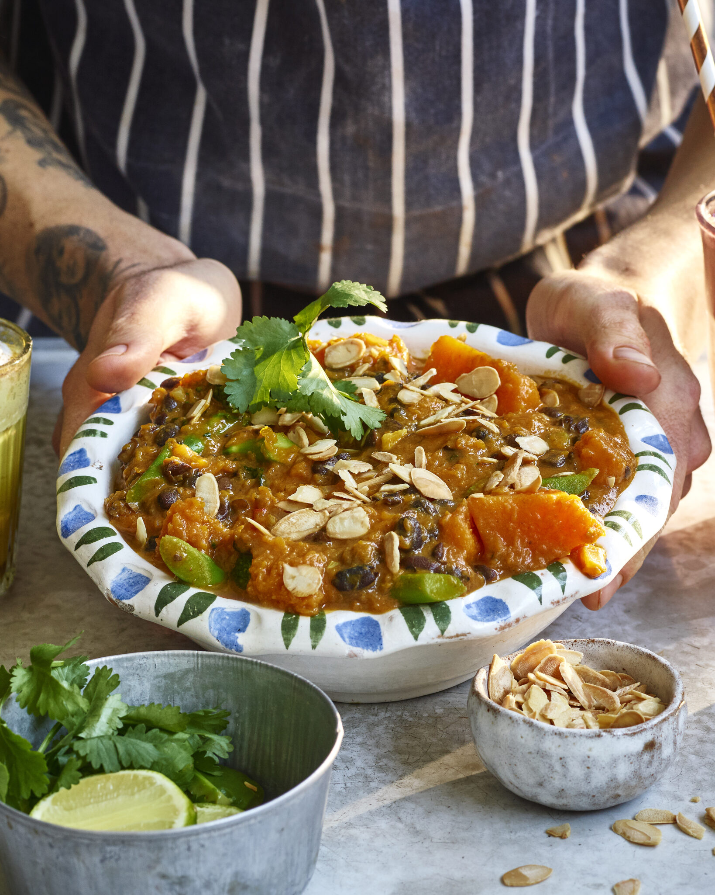

Pumpkin Curry

One pot anti-inflammatory pumpkin curry.
Ingredients
- 1 tbs Ground Turmeric
- 1 tsp Mustard Seeds
- 1 tsp Ground Cumin
- 1 tsp Ground Fenugreek
- 1 Onion, finely chopped
- 5 Cloves Garlic, minced
- Thumb-sized Piece Ginger, chopped fine
- 1 tsp Chilli Powder
- Pinch Sea Salt
- 250g Pumpkin or Sweet Potato, peeled & cubed
- 1 can Black Beans, drained & rinsed
- 1 Head Broccoli, cut into florets
- 4 Dried Curry Leaves, optional
- 1 litre Vegetable Stock
- 1 Cinnamon Stick
- Big Handful Fresh Greens, like kale, spinach, chard. Chopped small.
- 1/2 cup/125ml Coconut Milk
- 2 tsp Ground Garam Masala
Serve With
- Wild or Brown Rice, I stir through lemon & coriander
- Toasted Flaked Almonds
Method
- Toast the turmeric, mustard seeds, cumin & fenugreek for 2 minutes in a dry pan over a low heat. Remove them from the pan then sauté the onion, garlic & ginger. Add the spices back to the pan along with the chilli & cook for 5 minutes – stirring often.
- Add the pumpkin, broccoli, black beans & cook for a couple more minutes before adding the curry leaves, vegetable stock & cinnamon stick. Pop a lid on the pan and let the curry bubble away for 15 minutes.
- To serve stir through your greens, coconut milk & garam masala. Let the mix bubble away for a few minutes then serve up with rice & toasted almonds.